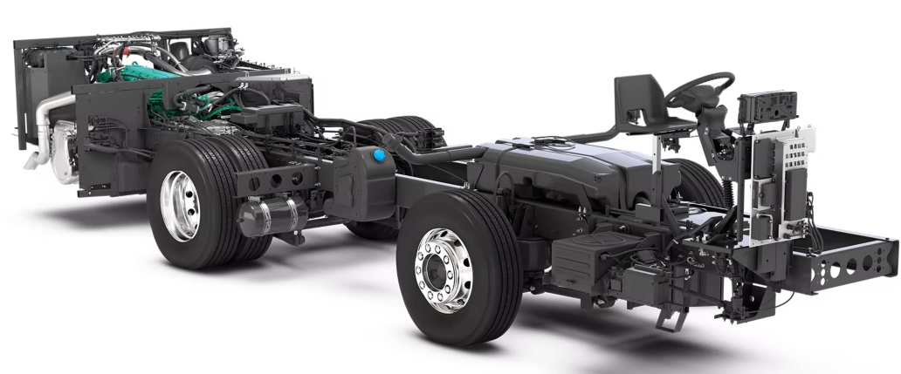

tanque acpm
bomba combustible, filtro, desfogue combustible, mangueras , bomba coman rail

inyector electronico used div
sensor pocision del sigueñal skp
sensor de posicion de mariposa
valvula iac
sensor de presion de combustible
sensor posion arbol de levas
zonda landa
sistema de alimentacion
valvular rgr recirculacion de gases
filtro de aire
cuerpo de aceleracion, valvula iac, posicion de mariposa ,multiple admision,valvulas, cilindro
scania
volvo b8r
optra
kia sportage
ford ranger
nisan sentra
see optra 1.8
ford ranger 4x4 platon
aveo target
list ww
- golf ul punto
- jeta
- amaro;
- tiguan
- polo
- bora
- blazer
- susuky 250 ol numero
- kawasaki 250
- honda 110
- hero 150
- akt 200
- susuki 125
- apache 200